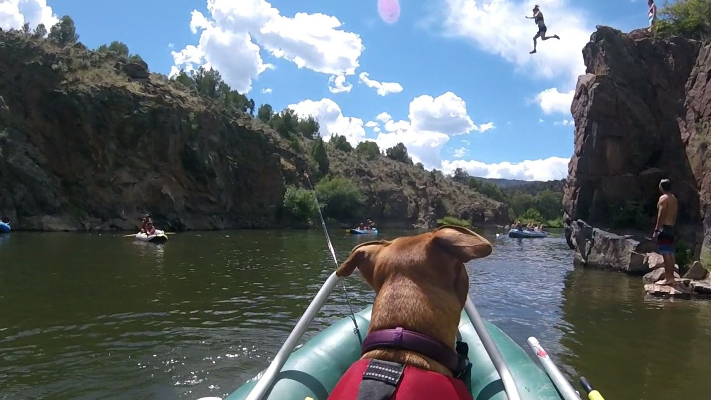

Blue River Below Green Mountain Reservoir

Jurassic Park is a nickname that whole heartedly fits this river. The fish are flat out huge dinosaurs that will make you skin moisturize itself and will cause your heart to beat right out of your chest cavity!
Water Details
- Float Range >400 - <1300cfs
- 13 River miles, 6 - 9hrs, class III-IV. Put-in class V
- 9 Weirs, 7 bridges
- Wade Range <300cfs
- First 3 Miles are public
- USGS sensor page 9057300
- USGS Green Mountian Reservoir
Colorado River Pumphouse Recreation Area
AKA Summer Shit Show! Float fishing, booze cruising and wade fishing are the things to do on this section of water. Very popular during summer months!
Water Details
- Float Range >400 - <1300cfs
- Pump House to Radium 4 miles, 2 - 2.5 Hours, Needles eye rapid III
- Radium to Rancho Del Rio 6 miles 3 - 4 Hours, Yarmony Rapid III
- Rancho Del Rio to State Bridge 4 miles 1-2 Hours
- State Bridge to Two Bridges 4.7 miles 2 - 4 Hours >5500CFS Two Bridges Impassable! High water take out right side.
- Two Bridges to Catamount Bridge 10 miles 5 - 7 hours
- Catamount Bridge to Pinball 9.4 miles 4 - 6 hours
- Pinball to Horse creek 8.5 miles 4 - 6 hours >5500CFS Scout Twin bridges, Right sneak at high CFS.
- Upper Colorado River Fish Report
South Platte River, Charlie Meyers Dream Stream

The dream stream. Are you friendly? You'll need to be on this section of water. Lots of fisherman come to chase spawning trout. Anadromis or postadromis?
Tail Water Details
- 6 miles of wadeable water
- Rainbows and cuttys spawn in spring
- Browns and kokanee spawn in fall
- Colorado Parks Wildlife Fish Survey
- Charlie Meyers Sate Wildlife Area Map